01 - Introduction
install something to get start
至少需要python3.6
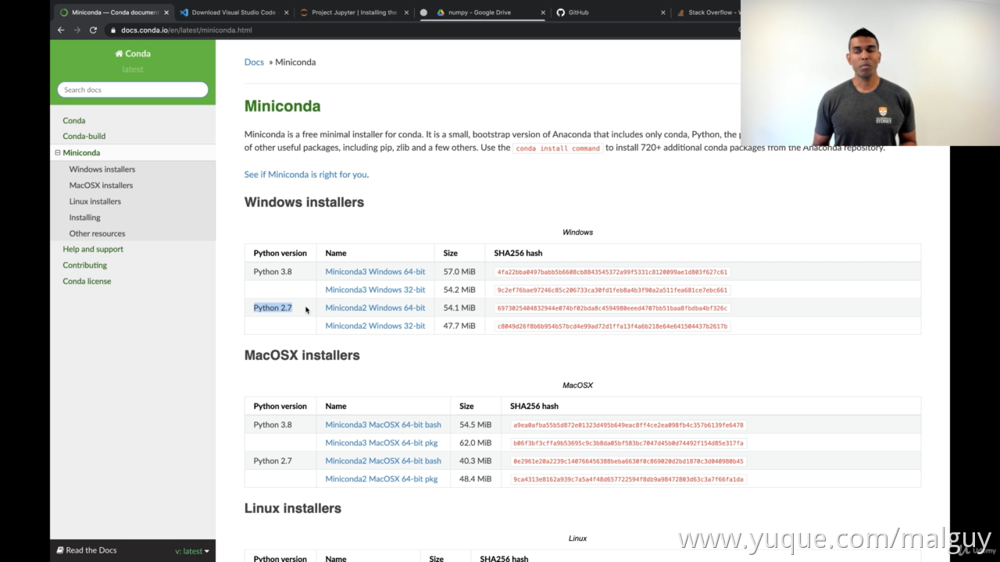
google drive
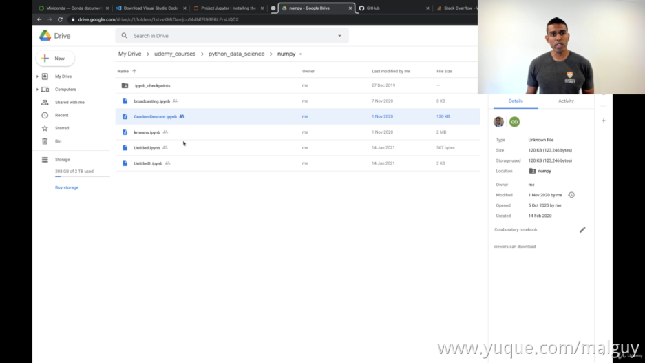
google colab
他使用的编辑器是vscode
01.04 Jupyter Notebooks
开启jupyter
jupyter notebook
新建jupyter文件
02 - Basic python + Pandas + Plotting
Data Structures
#!/usr/bin/env python
# coding: utf-8
# Native Data Structures
print("data science")
a = 1
b = 2
c = a / b
# print(a,b,c)
a,b,c
print(type(a))
print(type(b))
print(type(c))
d = [1,2,3,4]
type(d)
d[2]
d.append("cat")
d
d[-1],d[-2] # 从后面往前取值
d.pop() # 弹出
d
[elem**2 for elem in d] # **2 -> ^2 求2次方
newlist = []
for elem in d:
newlist.append(elem**2)
newlist
Dictionaries
#!/usr/bin/env python
# coding: utf-8
# In[1]:
# Dictionaries
# In[2]:
e={'a':1,'b':2,'dog':'best'}
# In[3]:
e['b']
# In[4]:
password_dict={"p1":'abc','p2':'dce'}
password_dict['p1']
# In[5]:
e['cat']='ok'
# In[6]:
e
# In[7]:
mylist=['a','b','c']
mydict={item: item+item for item in mylist}
mydict
02.04 Python functions (methods)
def addone(a):
return a + 1
print(addone(2))
def addone(a):
# 多个返回值=>元组类型
return a + 1, a + 2, a + 3, a ** 2
print(addone(1))
addone = lambda x: x + 1
print(addone(3.5))
squaring = lambda x: x ** 2
squaring(5)
squaring = lambda x,y: (x**2,y**2)
print(squaring(5,6))
02.05 Numpy functions
# numpy
# python add
a = [1,2,3]
b = [4,5,6]
print(a+b) # [1, 2, 3, 4, 5, 6]
# numpy add
a = np.array(a)
b = np.array(b)
print(a+b) # [5 7 9]
# zip函数
for item_a,item_b in zip(a,b):
print(item_a,item_b) # 1 4 | 2 5 | 3 6
def euclidean_distance(x,y):
"""
求两点间的线性距离
sqrt((x_1-y_1)^2 + ... + (x_N - y_N)^2)
"""
d = [a-b for a,b in zip(x,y)]
d = [np.square(e) for e in d]
return np.sqrt(sum(d))
def euclidean_distance(x,y):
d = [a-b for a,b in zip(x,y)]
d = [e**2 for e in d]
return sum(d) ** 0.5
x = [1,2,3]
y = [4,5,6]
print(euclidean_distance(x,y))
def euclidean_distance(x,y):
d = x-y
d = np.square(d)
return np.sqrt(d.sum())
x = np.array([1,2,3])
y = np.array([4,5,6])
print(euclidean_distance(x,y))
02.06 Conditional statements
# conditional statements and for loops
a = 1
if a<0:
print("a is negative")
elif a == 0:
print("a is zero")
else:
print('a is positive')
mystr= 'cat'
if mystr=='cat':
print("match")
mystr = 'is there a cat in here'
if 'is there' in mystr:
print('match')
mystr = None
if mystr:
print("there's something")
else:
print("there's nothing")
mystr = 0
if mystr:
print("0000")
else:
print('!!00')
# mystr = True
mystr = 1==1
if mystr:
print("there's something")
else:
print("there's nothing")
02.07 For loops
# for loops
for i in range(10):
if i%2==1:
print(i)
for i in range(10):
if i==4:
continue
if i==8:
break
if i %2==0:
print(i)
# nesting
for i in range(4):
for j in range(4):
if j>i:
break
print(i,j)
02.08 Dictionaries again
mylist = ['a','b','c']
mydict = {a:a+a for a in mylist}
print(mydict)
print(mydict['c'])
for key,val in mydict.items():
print(key,val*2)
print(mydict.items())
for letter in 'cat':
print(letter)
print(mydict.keys())
print(mydict.values())
02.10 Intro
02.11 Pandas simple functions
import pandas as pd
df = pd.read_csv('./titanic/train.csv')
print(df.shape) # (891, 12)
print(df.head()) # 显示头5个数据
# 返回其唯一值
print(df['Survived'].unique()) # [0 1]
# 1表示存活,0表示死亡,所以sum的结果就是幸存者数量
print(df['Survived'].sum()) # 返回该字段所有数据的加和
# 死亡人数
died = df.Survived==0
print(died.sum())
male = df.Sex=='male'
print(male.mean()) # 平均值?
print(df.Pclass.nunique())
print(df.Pclass.unique())
print(df.Fare.nunique())
print(df.Fare.unique())
print(df.describe())
print(df.dtypes)
02.12 Pandas Subsetting
# subsetting
print(df[df.Pclass==1].tail()) # tail()尾部5行
print(df[df.Pclass==1].tail(10)) # tail(n)尾部n行
print(df[(df.Pclass==1) & (df.Sex=='male')].head())
print(df[(df.Pclass==1) | (df.Sex=='male')].head())
cond1 = df.Pclass>1
cond2 = df.Sex!='male'
print(cond1, cond2)
print(df[cond1 & cond2].head())
02.13 Pandas loc and iloc
# ioc and iloc
## frac -> 对其中的多少(0~1)进行采样
## sample 会打乱顺序
df = df.sample(frac=0.6)
print(df.head())
# 锁
# df.loc[4]
df.loc[[4],'Sex']
# df.iloc[4]
df.iloc[4,4]
02.15 Pandas map and apply
# Map and Apply
df.sort_index(inplace=True) # pandas排序方法,inplace=True -> 创建新实例
print(df.Name.values[-10:][0])
# 遍历每个Name字段的值,并根据 , 分割,取分割后的第一个
# df['Last_name']=df.Name.map(lambda x: x.split(',')[0])
df['Last_name']=df["Name"].map(lambda x: x.split(',')[0])
print(df.sample(10)) # 随机抽10个
# 把Name和Age列拼接
print(df.apply(lambda x: x['Name']+" "+str(x["Age"]),axis=1))
print(df.Fare.min())
# 对每个log_fare的值取对数
# df['log_fare']=df.Fare.map(lambda x: np.log(x+1)) # 这里的log是取对数
df['log_fare']=df.Fare.apply(lambda x: np.log(x+1)) # 这里的log是取对数
print(df.sample(10))
02.16 Pandas groupby
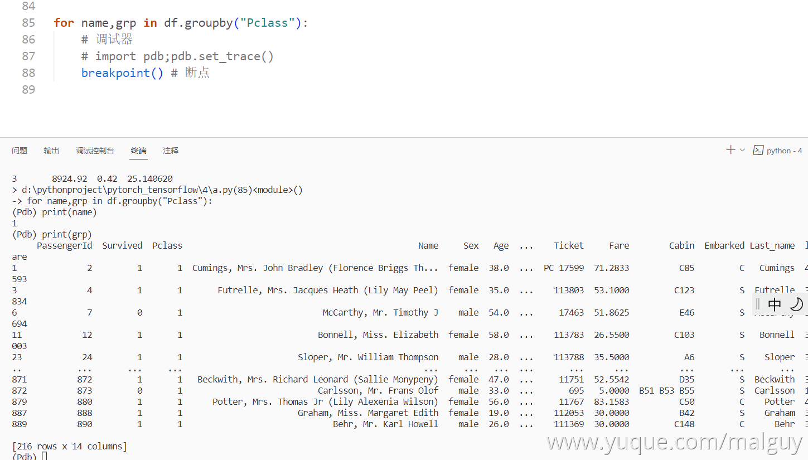
# groupby
## 根据Pclass字段分组,然后分别求每组的log_fare的mean
print(df.groupby('Pclass')['log_fare'].mean())
## Age字段一共有多少null值
print(df['Age'].isnull().sum())
## 根据Pclass字段分组,遍历Age字段(每组的),然后求其sum
df.groupby("Pclass")['Age'].apply(lambda x:x.isnull().sum())
## agg聚合,对某个数据进行多个操作
print(df.groupby("Pclass").agg({"Age":[sum,min,np.mean]}))
# for name,grp in df.groupby("Pclass"):
# 调试器
# import pdb;pdb.set_trace()
# breakpoint() # 断点
02.19 Line plot
import pandas as pd
import numpy as np
import matplotlib.pyplot as plt
# %matplotlib inline
x = np.arange(-5,5,0.1) # -5到5,步长(单位长度)为0.1
y = np.square(x) # x的平方
plt.plot(x,y)
plt.title('$y=x^2$')
plt.xlabel('x')
plt.ylabel('y')
plt.show()
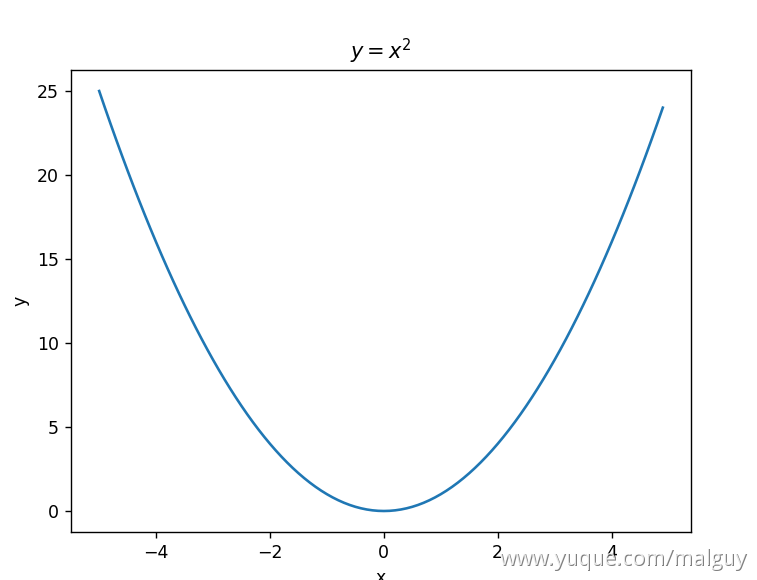
02.20 Plot multiple lines
x = np.arange(-5,5,0.1) # -5到5,步长(单位长度)为0.1
y = np.square(x) # x的平方
y2 = x ** 3 # x^3
plt.figure(figsize=(12,5)) # figsize 尺寸?
plt.plot(x,y,label='$y=x^2$')
plt.plot(x,y2,label='y=x^3')
plt.title('powers of x')
plt.xlabel('x')
plt.ylabel('y')
plt.legend() # 左上角的标签
plt.grid() # 网格
plt.show()
plt.savefig('figures1.png') # 保存图片
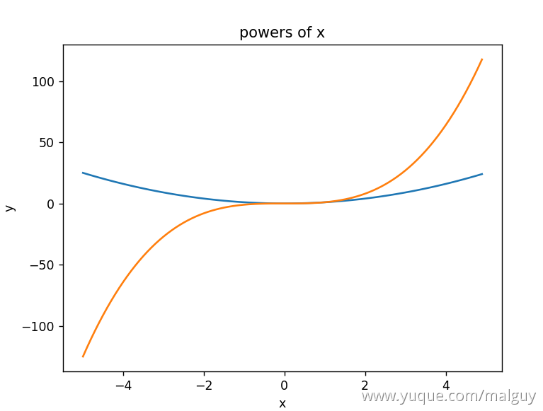
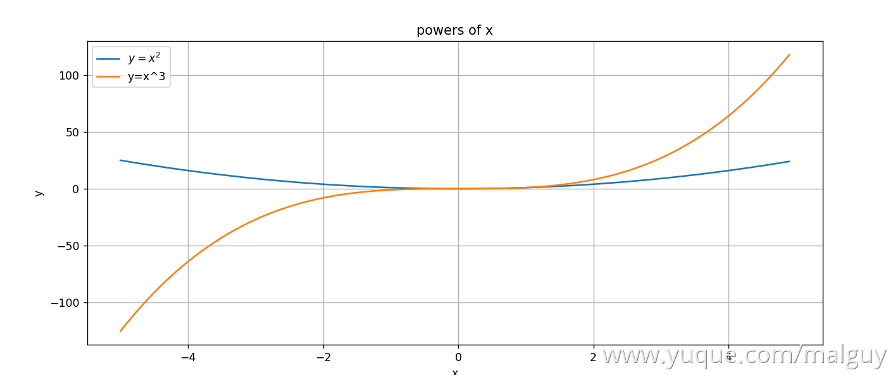
02.21 Histograms
import pandas as pd
import numpy as np
import matplotlib.pyplot as plt
# %matplotlib inline
df = pd.read_csv("./titanic/train.csv")
print(df.shape) # (891, 12)
print(df.head())
# 直方图
plt.hist(df.Fare,bins=30) # bins是柱子的宽度(x的跨度)
plt.grid()
plt.xlabel("Fare")
plt.title("Fare histogram")
plt.show()
df['log_fare'] = np.log(1+df.Fare)
# Pclass.unique 该字段所有不同的取值
for c in df.Pclass.unique():
"""
iloc 取指定单行多列 ;不能直接取字段，报取值错误
loc 取指定单行，多列，与iloc一样 ;不能像iloc一样直接取指定行，报类型错误;可以去特定行和列，得到指定得一个数字
"""
# alpha是每列的透明度
# density是密度 -> 是否将直方图的频数转换成频率；
plt.hist(df.loc[df.Pclass==c,'log_fare'], bins=30,alpha=0.3,label=c,density=True)
plt.legend()
plt.show()
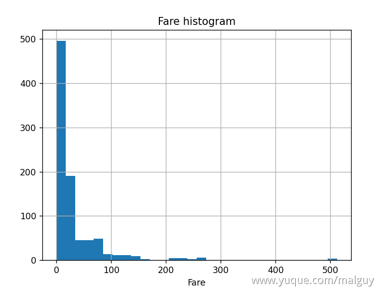
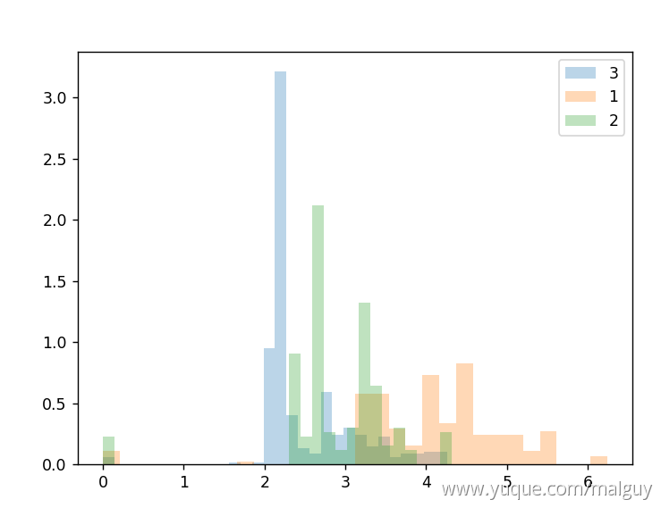
02.22 Scatter Plots
import pandas as pd
import numpy as np
import matplotlib.pyplot as plt
# 逻辑回归
from sklearn.linear_model import LogisticRegression
# %matplotlib inline
df = pd.read_csv("./titanic/train.csv")
print(df.shape) # (891, 12)
print(df.head())
plt.plot(df.Age,df.Fare)
plt.title('Fare vs Age')
plt.show() # -> 很混乱的线,它试图连接每个点
# 点图
plt.scatter(df.Age,df.Fare)
plt.title('Fare vs Age')
plt.show()
# 丢弃含空值的行、列
df.dropna(inplace=True,subset=['Fare', 'Age'])
print(df.shape) # (714, 12)
model = LogisticRegression()
# y必须是int或string类型
model.fit(df.Age.values.reshape(-1,1), df.Fare.values.reshape(-1,1).astype('int'))
x=np.arange(df.Age.min(),df.Age.max(),0.1).reshape(-1,1) # .reshape(-1,1)->转为一列
y=model.predict(x) # 模型的预测
plt.scatter(df.Age,df.Fare,label='data',c='g') # c -> color
plt.scatter(x,y,label='best fit',c='r')
plt.title('Fare vs Age')
plt.legend()
plt.show()
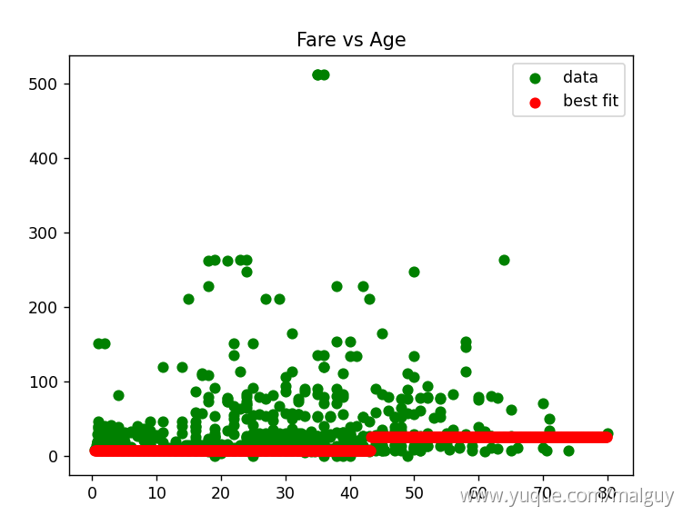
02.23 Subplots
import matplotlib.pyplot as plt
import numpy as np
from PIL import Image
x=np.arange(-5,5,0.1)
y=np.square(x)
y1=x**3
y2=x**4
img=np.array(Image.open('./QQ图片20211020220545 - 副本.png'))
# 子图
fig,ax = plt.subplots(2,2,figsize=(10,10))
## 4个位置上创建不同子图
ax[0][0].plot(x,y)
ax[0][0].set_xlabel('x')
ax[0][0].set_title("first plot")
ax[0][1].plot(x,y1)
ax[1][0].plot(x,y2)
ax[1][1].plot(img)
fig.savefig('subplots.jpg')
# fig.show()
# 因为图一下子就没了,所以用断点卡住
# breakpoint()
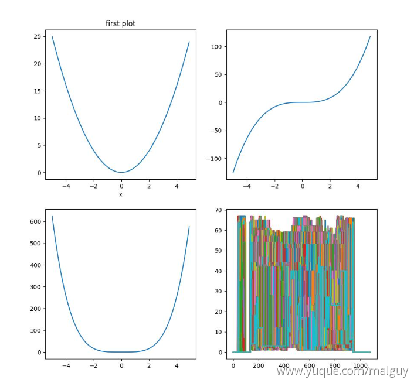
02.24 Seaborn + pair plots
pip install seaborn
from sklearn.datasets import load_iris
import pandas as pd
import seaborn as sns
import matplotlib.pyplot as plt
# %matplotlib inline
data=load_iris() # 字典类型
print(data)
df = pd.DataFrame(data['data'],columns=data['feature_names'])
df['target']=[data['target_names'][i] for i in data['target']]
print(df)
# sns.pairplot(df)
# sns.pairplot(df,vars=df.columns[:2])
# hue加颜色, 色调密度估计->density estimation
sns.pairplot(df,vars=df.columns[:2],hue='target')
plt.show()
03 - Machine Learning Numpy + Scikit Learn
03.03 Gradient Descent
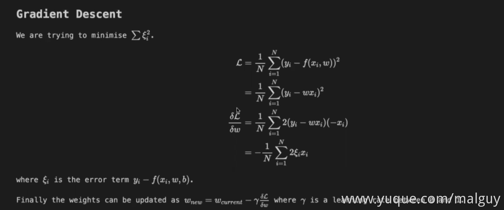
import numpy as np
import matplotlib.pyplot as plt
"""
seed( ) 用于指定随机数生成时所用算法开始的整数值，如果使用相同的seed( )值，则每次生成的随即数都相同，
如果不设置这个值，则系统根据时间来自己选择这个值，此时每次生成的随机数因时间差异而不同
"""
np.random.seed(42)
N = 100
# rand函数根据给定维度生成[0,1)之间的数据，包含0，不包含1
# 参数就是生成的维度(N,1) -> N*1
# 返回值为指定维度的array
x = np.random.rand(N,1)*5
y = 9.81*x
# randn函数返回一个或一组样本，具有标准正态分布。
# 参数就是生成的维度(N,1) -> N*1
noise = 2*np.random.randn(N,1)
y_obs = y+noise
plt.scatter(x,y_obs,label="Observations")
plt.plot(x,y,c='r',label="True function")
plt.legend()
plt.show()
# helper functions
# w*x (y=w^t*x+b)
def f(w):
return w*x
# 方差
def loss_function(e):
L = np.sum(np.square(e))/N
return L
def dL_dw(e,w):
return -2*np.mean(e*x)
def gradient_descent(iter=100,gamma=0.1):
w=10*np.random.random()
params=[]
loss = np.zeros((iter,1))
for i in range(iter):
params.append(w)
e=y_obs-f(w) # (y_obs真实值-f(w)预测值)
loss[i]=loss_function(e)
# update parameters
w_news=w-gamma*dL_dw(e,w) # 更新w
w=w_news
return params,loss
params,loss=gradient_descent()
iter=100
gamma=0.1
w=10*np.random.randn()
params=[]
loss=np.zeros((iter,1))
for i in range(iter):
params.append(w)
e=y_obs-f(w)
loss[i]=loss_function(e)
w_news=w-gamma*dL_dw(e,w)
w=w_news
print(dL_dw(e,w)) # -1.0766942892814769e-14
plt.plot(loss)
plt.show()
params=np.array(params)
plt.plot(params)
plt.title('Gradient Descent')
plt.xlabel('w')
plt.show()
print(params[-1]) # 9.757142247178272
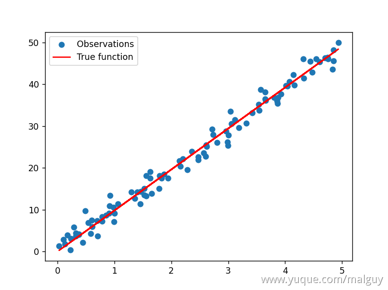
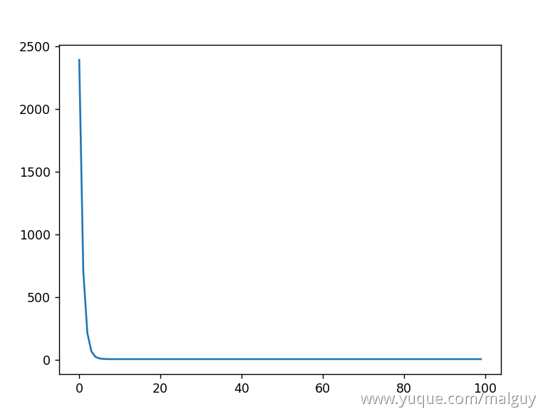
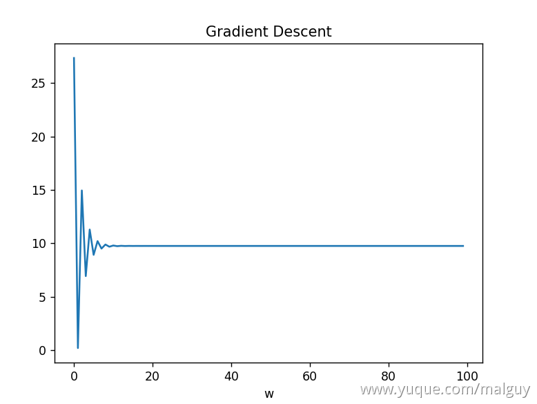
03.04 Kmeans
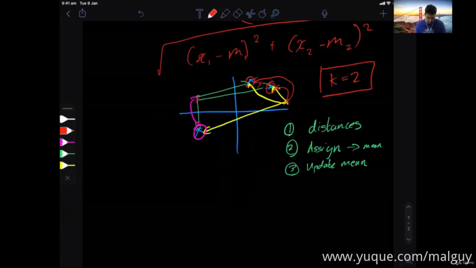
import matplotlib.pyplot as plt
import numpy as np
np.random.seed(42)
K = 3
D = 2
N = 1000
Ns = [300,400,300]
# 3*2 规格的随机数
means = 5*np.random.randn(K, D)
print(means)
x = []
for n,m in zip(Ns,means):
print(n,m)
x.append(np.random.randn(n,D)+m)
# print(x)
print([x_.shape for x_ in x])
for x_,m in zip(x,means):
print(x_.shape,m.shape)
plt.scatter(x_[:,0],x_[:,1])
plt.plot(m[0],m[1],'kx')
plt.title('True Clusters')
plt.show()
data=np.vstack(x)
plt.scatter(data[:,0],data[:,1])
plt.show()
print(data.shape)
def distance_matrix(x,m):
"""
计算x和m之间的距离
x -> data point
m -> possible means
"""
# x*m的d向量(值都为0)
d = np.zeros((len(x),len(m)))
for i in range(len(x)):
for j in range(len(m)):
# [x,m]的值 => 对应x,m的距离
d[i,j] = dist(x[i,:],m[j,:])
return d
def dist(x1,x2,axis=None):
"""
计算euclidean(欧几里得)距离
"""
return np.sqrt(np.sum(np.square(x1-x2),axis))
x_test = np.array([[0,1],[1,0],[0,0],[1,1]])
print(x_test)
print(distance_matrix(x_test,x_test))
def dist(x1,x2,axis=None):
"""
calculate enclidean distance
"""
# breakpoint()
return np.sqrt(np.sum(np.square(x1-x2),axis))
def distance_matrix2(x,m):
# breakpoint()
d = [dist(x,m_,axis=1)for m_ in m]
d = np.stack(d,axis=1)
return d
print(distance_matrix2(x_test,x_test))
k = 3
iters=10
np.random.seed(42)
# 在data里取随机一个中心点
means=np.random.randn(k,data.shape[1])
for i in range(iters):
# 求data中点和means的距离
d = distance_matrix(data,means)
# 求其中最小距离的点
cluster = d.argmin(axis=1)
for j in range(k):
idx = cluster == j
plt.plot(means[j,0],means[j,1],'rx')
plt.scatter(data[idx,0],data[idx,1])
# calculate new mean
means[j,:]=data[idx].mean(axis=0)
plt.show()
# breakpoint()
03.06 Broadcasting
import numpy as np
np.random.seed(1)
a= np.random.rand(3,2)
b= np.random.randint(0,2,(2,)) # [0 1]
print(a,b)
print(a*b)
c= np.random.randint(0,2,(2,1))
print( c) # [[1][0]]
# print(a*c) # error
print(a*c.T)
b = b[None,:]
print(b.shape) # (1,2)
print(a+b)
print(a + b.squeeze())
print(a,b.squeeze()) # squeeze [[0,1]] -> [0,1]
loss=np.random.randn(3,1)
weight=np.random.randn(3)
weighted_loss=loss*weight # (3,1) * (3,)
print(weighted_loss)
weighted_loss=loss*weight[:,None] # (3,1) * (3,1)
print(weighted_loss,weighted_loss.shape) # (3,1)
print(weighted_loss.mean())
print(sum(weighted_loss)/len(weighted_loss))
03.07 scikit learn into
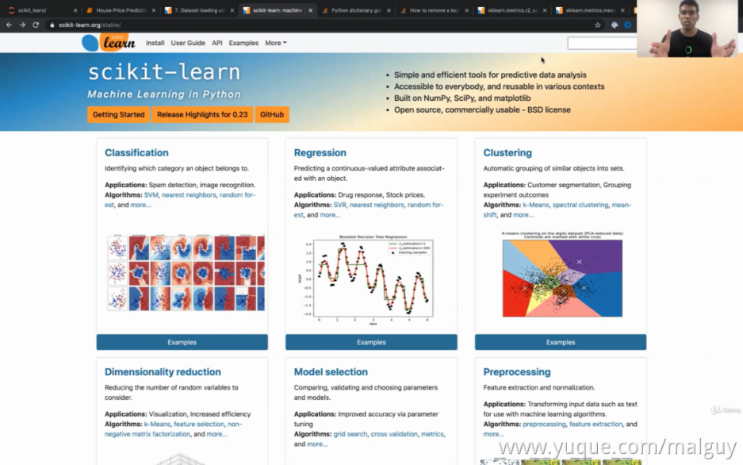
03.08-03.09 Linear Regression
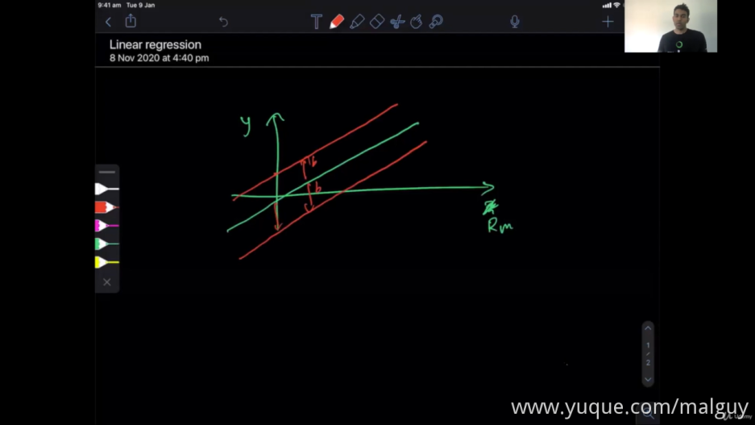
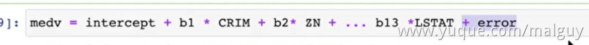
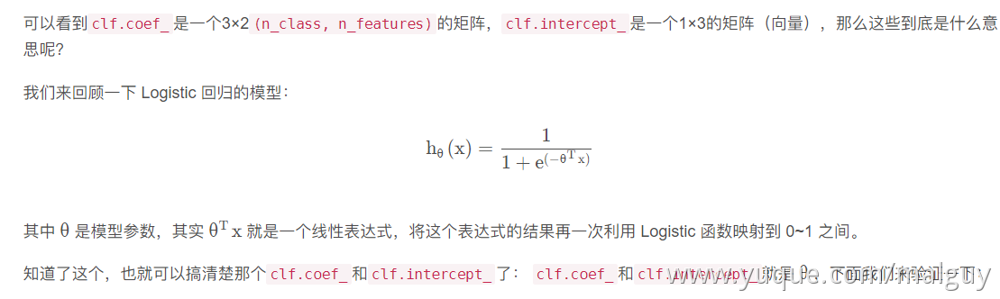
# 波士顿房价数据集
from sklearn.datasets import load_boston
# 训练集/数据集划分器
from sklearn.model_selection import train_test_split
# 逻辑回归模型
from sklearn.linear_model import LinearRegression
import pandas as pd
import numpy as np
data = load_boston()
print(data['DESCR'])
x = pd.DataFrame(data['data'],columns=data['feature_names'])
y = pd.DataFrame(data['target'],columns=['MEDV'])
print(x)
x_train,x_test,y_train,y_test = train_test_split(x,y,test_size=0.1,random_state=1)
print(x_train.shape,x_test.shape,y_train.shape,y_test.shape)
model = LinearRegression()
# 训练
model.fit(x_train,y_train)
# 预测
y_pred = model.predict(x_test)
print(y_pred)
# y = model.coef_.T*X + model.intercept_
print(model.coef_,model.intercept_)
print(model.coef_.shape,x_test.shape) # (1, 13).T * (51, 13) -> (51,1)
# np.matmul 矩阵相乘
y_pred_manual = np.matmul(x_test.values,model.coef_.T)+model.intercept_
print((y_pred_manual == y_pred))
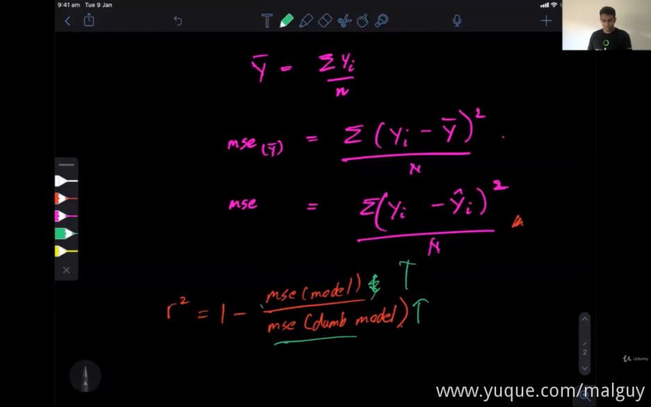
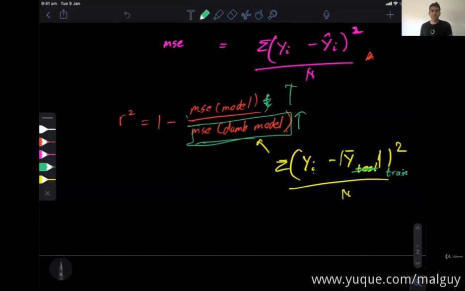
# 波士顿房价数据集
from sklearn.datasets import load_boston
# 训练集/数据集划分器
from sklearn.model_selection import train_test_split
# 逻辑回归模型
from sklearn.linear_model import LinearRegression
from sklearn.metrics import mean_squared_error,mean_absolute_error,r2_score
import pandas as pd
import numpy as np
data = load_boston()
print(data['DESCR'])
x = pd.DataFrame(data['data'],columns=data['feature_names'])
y = pd.DataFrame(data['target'],columns=['MEDV'])
print(x)
x_train,x_test,y_train,y_test = train_test_split(x,y,test_size=0.1,random_state=1)
print(x_train.shape,x_test.shape,y_train.shape,y_test.shape)
model = LinearRegression()
# 训练
model.fit(x_train,y_train)
# 预测
y_pred = model.predict(x_test)
print(y_pred)
# y = model.coef_.T*X + model.intercept_
print(model.coef_,model.intercept_)
print(model.coef_.shape,x_test.shape) # (1, 13).T * (51, 13) -> (51,1)
# np.matmul 矩阵相乘
y_pred_manual = np.matmul(x_test.values,model.coef_.T)+model.intercept_
print((y_pred_manual == y_pred))
# 每个预测值和测试集的实际值的差
e = (y_pred - y_test)
print(e)
# 所有偏差值的绝对值的平均
# MEDV 3.745638
print(np.abs(e).mean())
# 3.7456376770292303
print(mean_absolute_error(y_test,y_pred))
# 所有偏差值的平方的平均 -> 方差
# MEDV 20.544275
print(np.square(e).mean())
# 20.54427465932584
print(mean_squared_error(y_test,y_pred))
# 回归模型评价指标R2_score
mse_our_model = mean_squared_error(y_test,y_pred)
# np.ones_like 返回一个用1填充的跟输入 形状和类型 一致的数组。
mes_bad_model = mean_squared_error(y_test,y_train.mean().values * np.ones_like(y_test))
# 0.7786386580298909
print(r2_score(y_test,y_pred))
# 0.7787361370918805
print((1 - mse_our_model / mes_bad_model))
03.11 Classification and Regression Trees
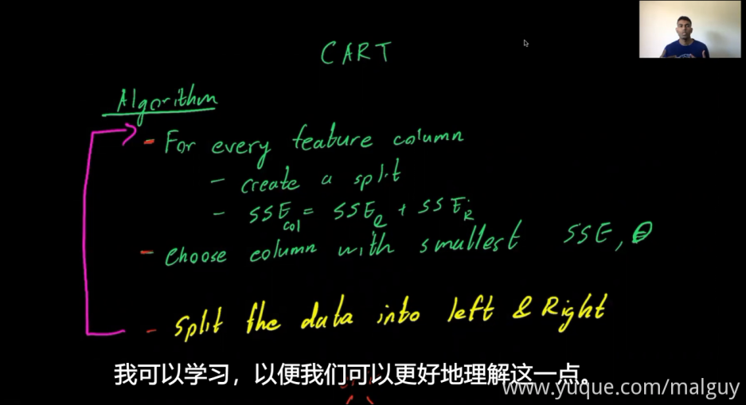
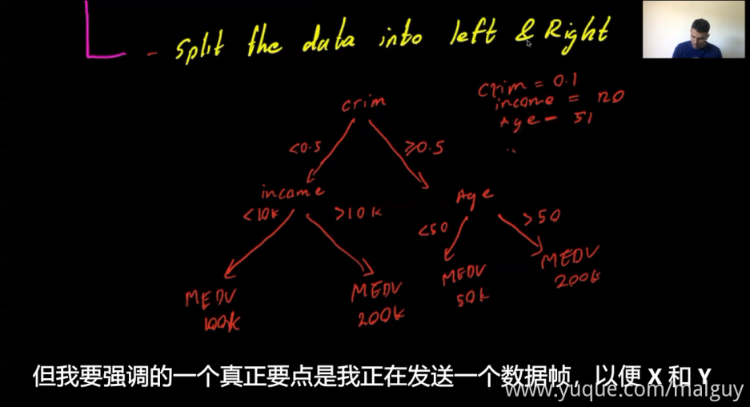
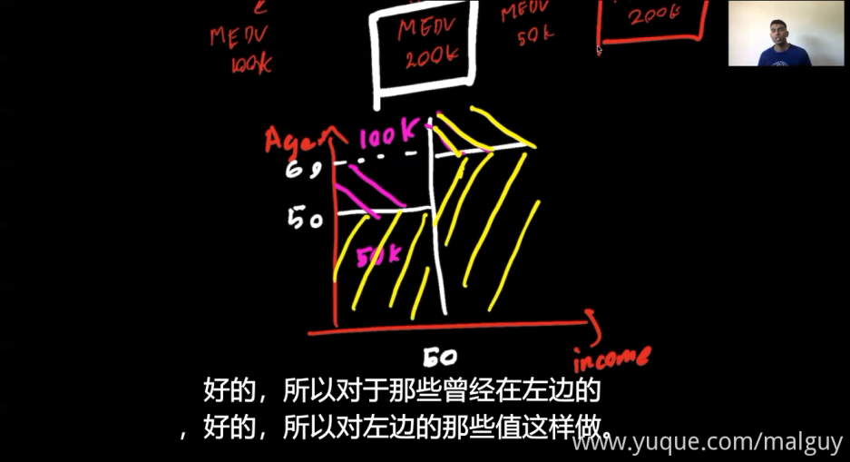